도매매장에 주문만 넣으면, 픽업부터 포장·배송까지 밤낮딜리버리가 대신해 드립니다. 이 설명서는 주문접수 홈페이지를 처음 쓰는 분도 그대로 따라 할 수 있게 화면 그림과 함께 차례대로 안내합니다.
https://bamnat-delivery.bamnat.workers.dev/여기까지 하면 끝입니다. 나머지 픽업·택배 발송픽업·검수·포장·배송은 밤낮딜리버리가 합니다.
처음 한 번만 하면 됩니다. 승인이 나야 주문과 픽업요청을 넣을 수 있어요.
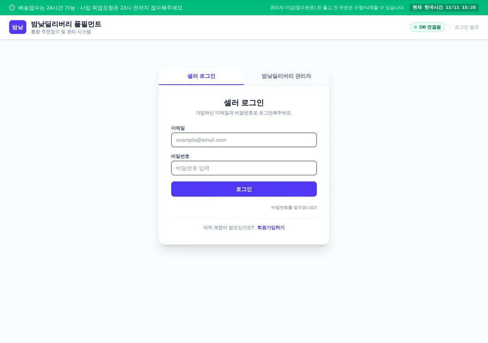
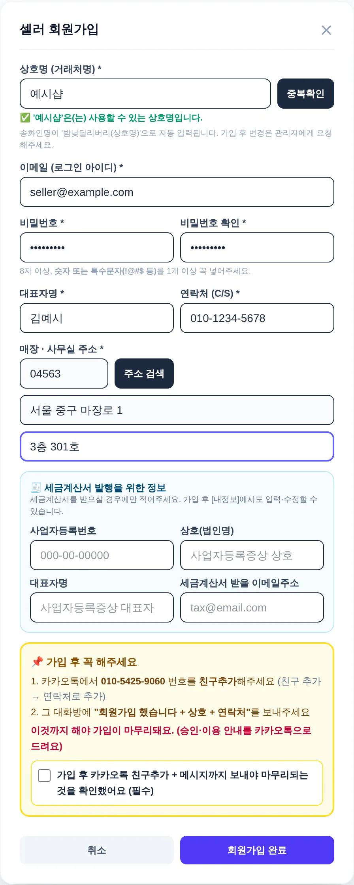
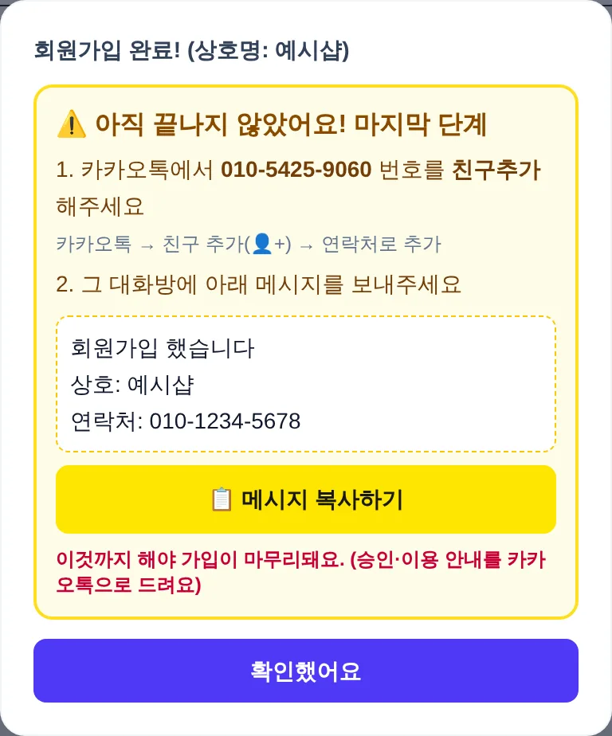
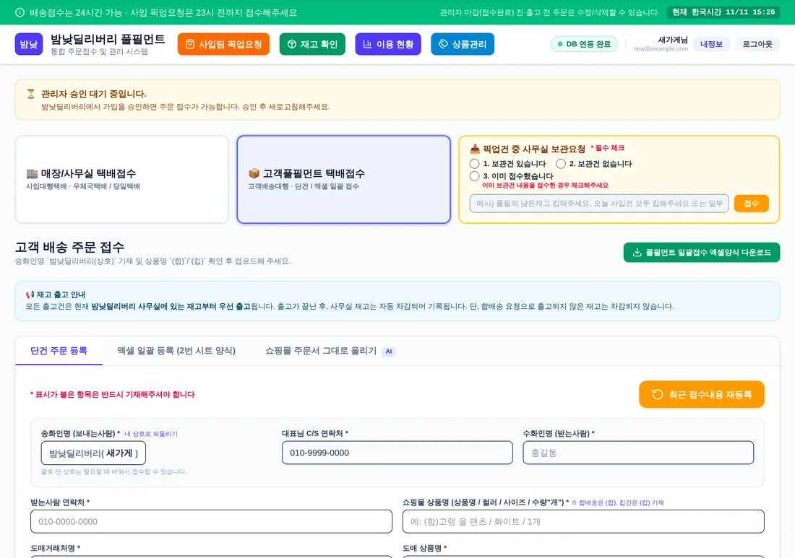
💡 비밀번호를 잊었다면 로그인 화면의 [비밀번호를 잊으셨나요?]를 누르면 이메일로 다시 설정하는 링크가 옵니다.
이 단계는 홈페이지가 아니라 평소처럼 신상마켓·카카오톡 등으로 매장에 직접 합니다.
📞 신상마켓 주문 시 매장에 알려줄 사입팀 연락처: 010-5091-5784
(주문 시 매장에만 전달해주세요. 부탁드립니다. 급한 건이 아니라면 다른 문의 연락은 삼가주세요.)
매장 주문이 끝났으면, 어느 매장에서 물건을 가져올지 사입팀에 알려줍니다.
처음 이용하시는 대표님은 주문접수 홈페이지(https://bamnat-delivery.bamnat.workers.dev/)에 로그인한 뒤 아래처럼 픽업요청을 접수하시면 됩니다.
그다음부터는 SO솔루션(사입접수 프로그램)으로 더 간편하게 접수하실 수 있어요. 상호와 연락처를 카톡으로 남겨주시면 프로그램 아이디를 만들어 사용법과 함께 보내드립니다.
SO솔루션 픽업요청은 가능한 23시 전까지, 최대 새벽 1시까지 접수할 수 있어요. 아직 SO솔루션을 쓰지 못하는 신규 업체나, SO솔루션 접수가 안 돼서(새벽 1시 이후 등) 급하게 픽업접수를 해야 하면 아래 [사입팀 픽업요청]으로 접수해 주세요. 밤낮 사입팀에게 바로 전송되고, 새벽 4시까지 접수할 수 있어요.
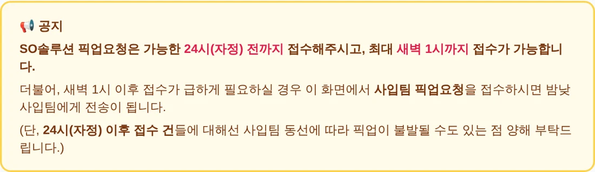
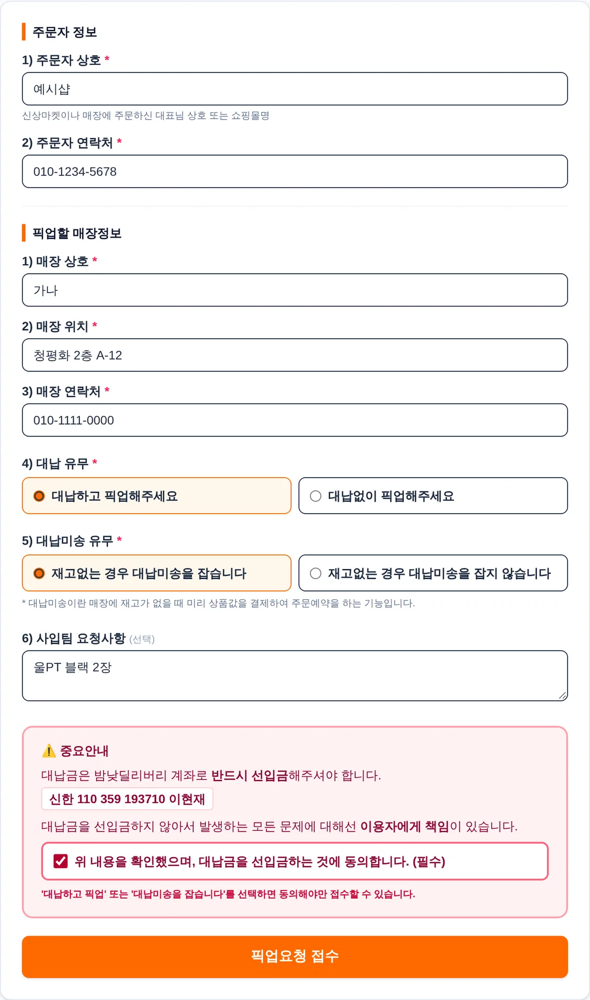
⚠️ 중요 사입팀 대납을 요청했다면 대납금은 반드시 계좌로 먼저 입금해야 합니다.
입금계좌 신한은행 110-359-193710 이현재
대납금을 뺀 나머지 서비스 비용은 물건이 출고된 뒤 청구서(정산서)로 따로 보내드립니다.
픽업요청 화면 맨 아래 내 픽업요청 내역에 최근 30건이 보입니다.
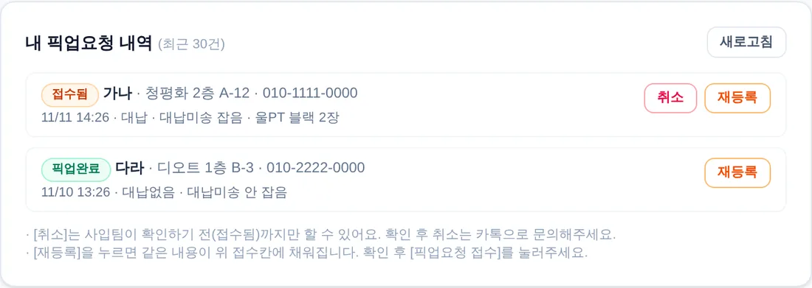
4장 택배접수를 하기 전에 이 노란 칸부터 골라야 접수가 됩니다. 하루에 한 번만 하면 돼요.
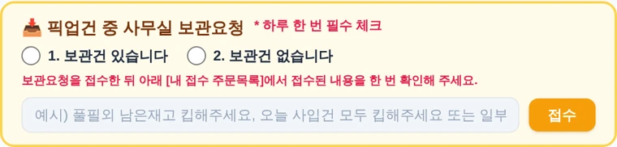
[접수]를 누르면 노란 칸이 한 줄로 줄어들어요. 그날은 로그인을 다시 해도, 다른 컴퓨터나 휴대폰에서 들어와도 다시 고르지 않아도 됩니다. 다음 날이 되면(밤 12시가 지나면) 다시 한 번 골라주세요.
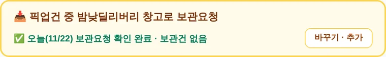
✏️ 보관할 물건이 생기거나 내용을 바꾸고 싶으면 [바꾸기 · 추가]를 누르세요. 이미 적은 보관 내용은 내 접수 주문목록의 보관요청 줄에서 [수정]으로 고칠 수 있어요. 밤낮딜리버리가 접수를 마감(접수완료)하기 전까지 고칠 수 있습니다.
픽업한 물건을 대표님 매장이나 사무실로 보내 달라고 접수합니다.
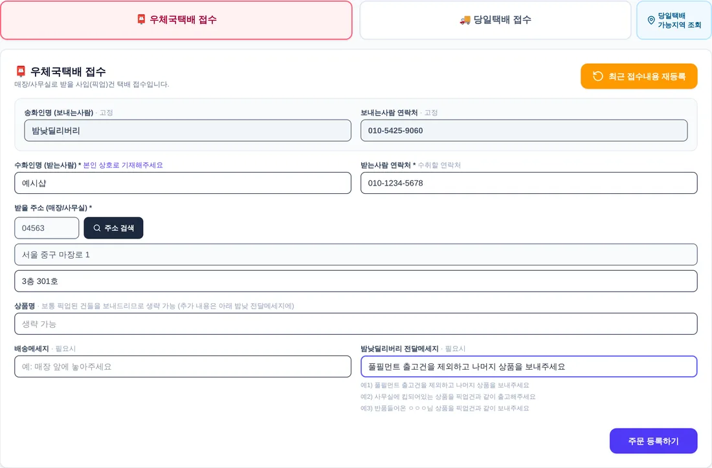
💡 지난번과 같은 주소라면 오른쪽 위 주황 [최근 접수내용 재등록]을 누르면 한 번에 채워집니다.
픽업요청을 마쳤다면, 이제 물건을 받을 손님 정보를 넣습니다. 방법은 세 가지예요.
로그인 후 첫 화면에서 [📦 고객풀필먼트 택배접수] 카드를 누르면 아래에 접수 화면이 나옵니다.
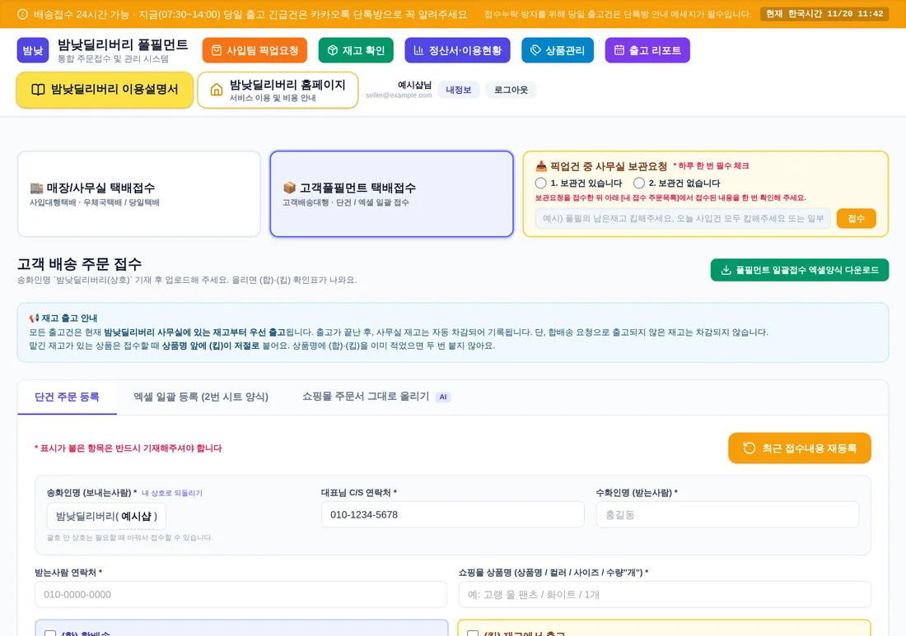
| 방법 | 이럴 때 좋아요 |
|---|---|
| 단건 주문 등록 | 주문이 몇 건 안 될 때, 한 건씩 직접 입력 |
| 엑셀 일괄 등록 | 밤낮딜리버리 엑셀 양식에 여러 건을 적어 한 번에 올릴 때 |
| 쇼핑몰 주문서 그대로 올리기 | 스마트스토어·쿠팡·지그재그·에이블리 등에서 받은 주문서 엑셀을 손대지 않고 바로 올릴 때 |
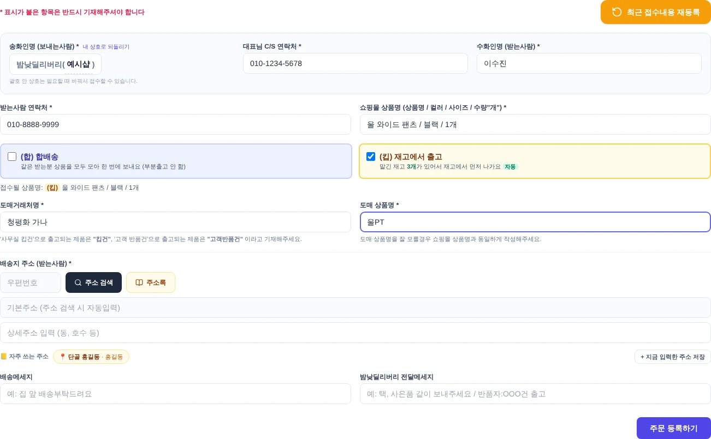
💡 자주 보내는 손님은 주소 칸 아래 [+ 지금 입력한 주소 저장]을 눌러 두면, 다음부터 [주소록]에서 한 번에 불러올 수 있어요.
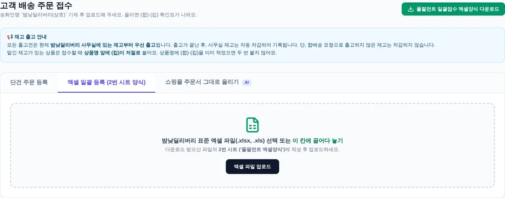
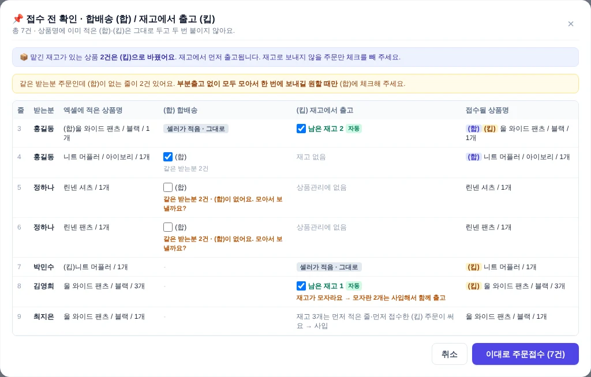
📗 컴퓨터에 엑셀이 없다면? 구글 시트로도 돼요
연락처 맨 앞 0이 사라지면 010-1234-5678처럼 가운데 줄(-)을 넣어 적어주세요.
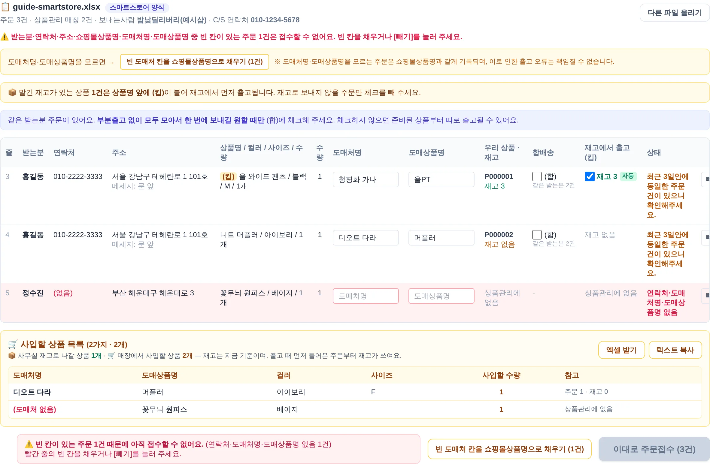
🛒 확인표 아래에는 사입할 상품 목록도 나와요. 사무실 재고로 보낼 수 있는 수량은 빼고, 도매 매장별로 사입할 상품과 수량만 모아 보여줍니다. [엑셀 받기]·[텍스트 복사]로 받아 매장 주문할 때 쓰세요. 처음 보는 상품의 도매처를 적으면 [상품관리에 기억하기]로 다음부터 자동으로 채워져요.
잘 안 될 때 쇼핑몰 주문서로 접수가 잘 안 되면, 방법 2의 엑셀 양식을 내려받아 옮겨 적은 뒤 올려주세요.
✅ 여기까지 하면 끝입니다. 쇼핑몰 주문 확인 → 도매매장 주문 → 픽업요청 → 고객풀필먼트 접수. 나머지 픽업·검수·포장·배송은 밤낮딜리버리가 합니다.
📢 모든 출고는 밤낮딜리버리 사무실에 있는 내 재고부터 먼저 나갑니다. 맡긴 재고가 있는 상품은 접수할 때 상품명 앞에 (킵)이 저절로 붙고, 출고 후 사무실 재고는 자동으로 빠집니다.
🏬 풀필먼트 하고 남는 물건을 매장·사무실로 받고 싶을 때
풀필먼트 접수와 함께 [🏬 매장/사무실 택배접수]도 한 건 넣어주세요. 우체국택배나 당일택배 중에 고르면 돼요. 밤낮딜리버리 전달메세지에 "풀필먼트 출고건 제외하고 나머지 보내주세요"라고 적어주세요.
남는 물건을 사무실에 맡겨두고 싶으면 노란 보관요청 칸에서 [1. 보관건 있습니다]를 고르세요.
택배접수 화면 아래 내 접수 주문목록에서 내가 넣은 주문을 모두 볼 수 있어요.
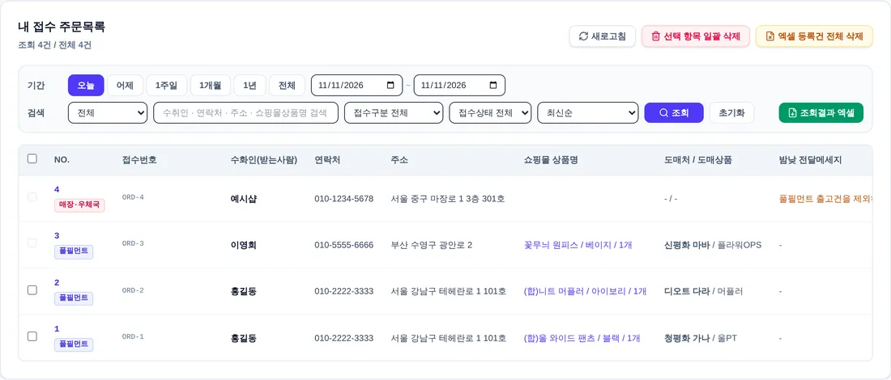
| 무엇 | 언제까지 |
|---|---|
| 택배 접수 (매장/사무실 · 고객풀필먼트) | 24시간 가능 |
| SO솔루션 픽업요청 | 가능한 23시 전까지, 최대 새벽 1시까지 |
| 신규 업체 · SO솔루션 접수 불가로 급한 픽업요청 | 주문접수 홈페이지의 [사입팀 픽업요청]으로 접수 (새벽 4시까지 가능, 밤낮 사입팀에게 전송) |
| ※ 23시 이후 접수 건들에 대해선 사입팀 동선에 따라 픽업이 간혹 불발 될 수도 있는 점 양해 부탁드립니다. | |
| 오전 7시 30분 ~ 오후 2시 접수 중 급한 당일 출고 건 | 카카오톡 단톡방으로 꼭 따로 알려주세요 |
아직 승인 전일 수 있어요. 카톡으로 "회원가입 했습니다 + 상호 + 연락처"를 보내셨는지 확인해 주세요. 승인 후에는 화면을 새로고침하세요.
오늘 처음 택배접수를 하기 전에 노란 밤낮딜리버리 창고로 보관요청 칸에서 하나를 고르고 [접수]를 먼저 눌러주세요. 하루에 한 번만 하면 되고, 그날은 다시 묻지 않아요.
내 접수 주문목록에서 표를 옆으로 밀어 [수정]을 누르세요. 마감(접수완료)됐거나 출고된 주문은 고칠 수 없으니 카톡으로 말씀해 주세요.
픽업요청을 넣을 때 미리 입금해 주세요. 신한은행 110-359-193710 이현재. 나머지 서비스 비용은 출고 후 정산서로 보내드립니다.
버튼 옆 빨간 상자에 이유가 나옵니다. 빨간 줄의 빈 칸(연락처·도매처 등)을 채우거나 [빼기]를 누르면 버튼이 켜집니다.
화면 맨 위 파란 [상품관리] 버튼을 누르면 열려요. 한 번 등록해 두면 쇼핑몰 주문서를 올릴 때 도매처가 자동으로 채워져서 훨씬 편해집니다.
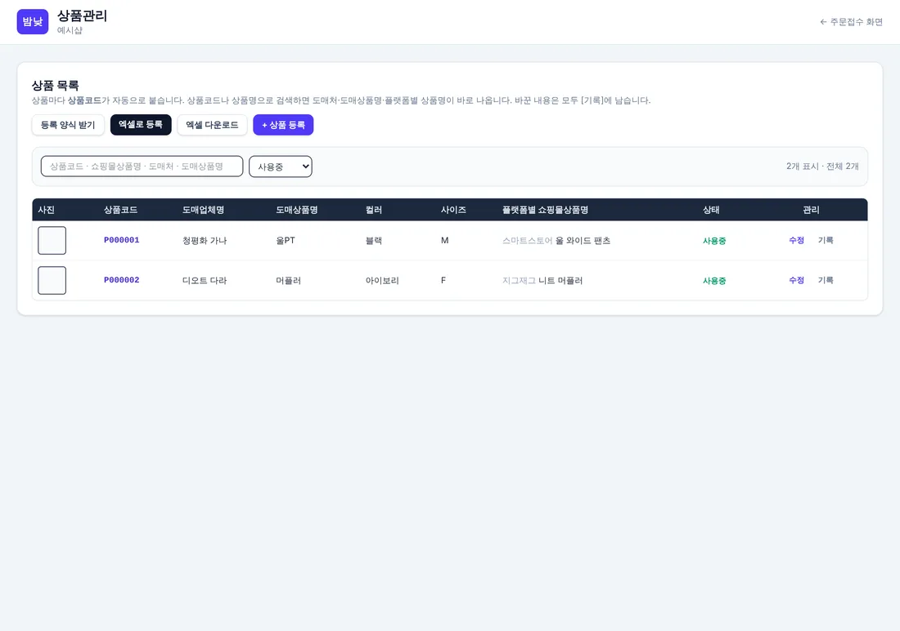
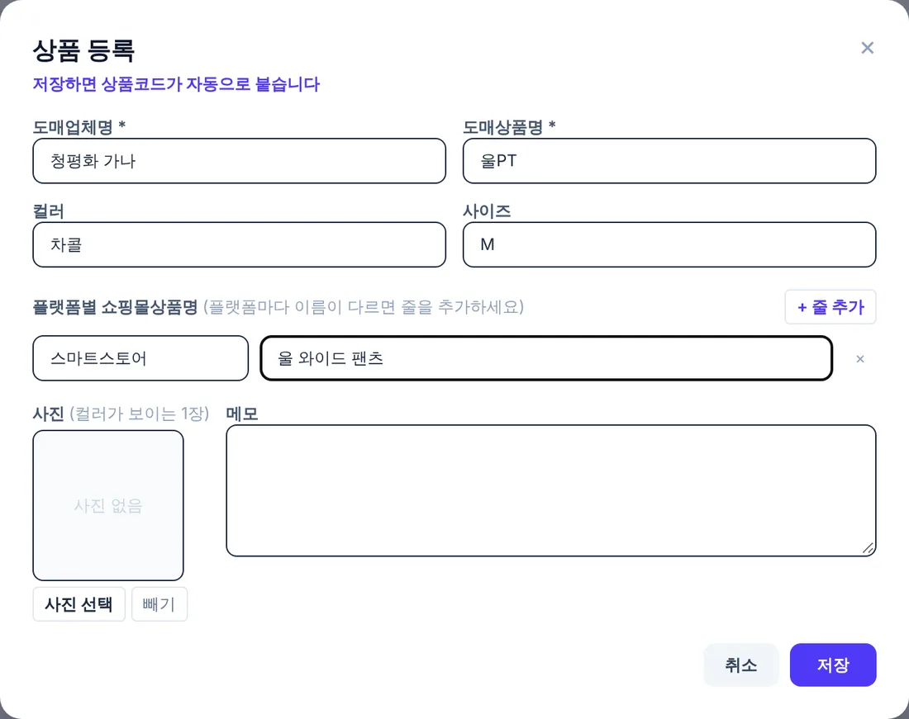
💡 등록해 두면 [쇼핑몰 주문서 그대로 올리기]에서 쇼핑몰 상품명만 보고도 어느 도매처 물건인지 자동으로 찾아주고, 사무실에 있는 재고도 함께 보여줘요.
화면 맨 위 초록 [재고 확인] 버튼을 누르면 열려요. 밤낮딜리버리 사무실에 맡겨둔 내 물건의 최종 재고를 상품별로 봅니다.
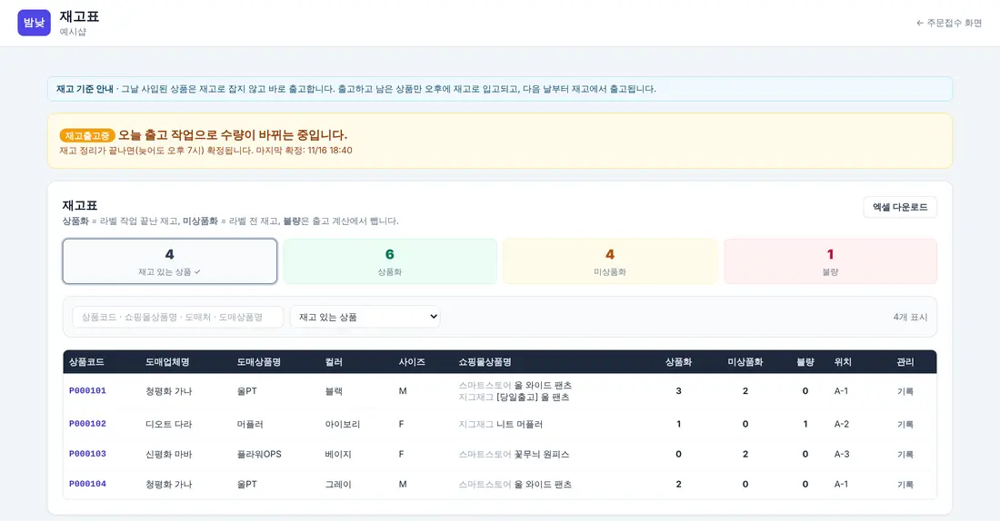
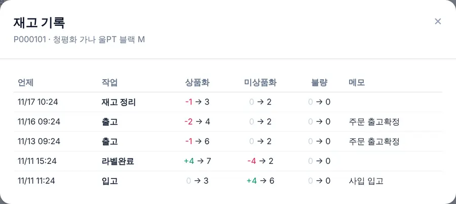
📢 그날 사입된 상품은 재고로 잡지 않고 바로 출고해요. 출고하고 남은 상품만 오후에 재고로 들어오고, 다음 날부터 주문이 오면 사무실에 있는 내 재고에서 나갑니다. 상품마다 들어오고 나간 내역은 상품 줄의 [기록] 버튼을 누르면 볼 수 있어요.
화면 맨 위 남색 [정산서·이용현황] 버튼을 누르면 열려요. 지난 정산서를 다시 보고, 기간 동안 얼마를 이용했는지 봅니다.
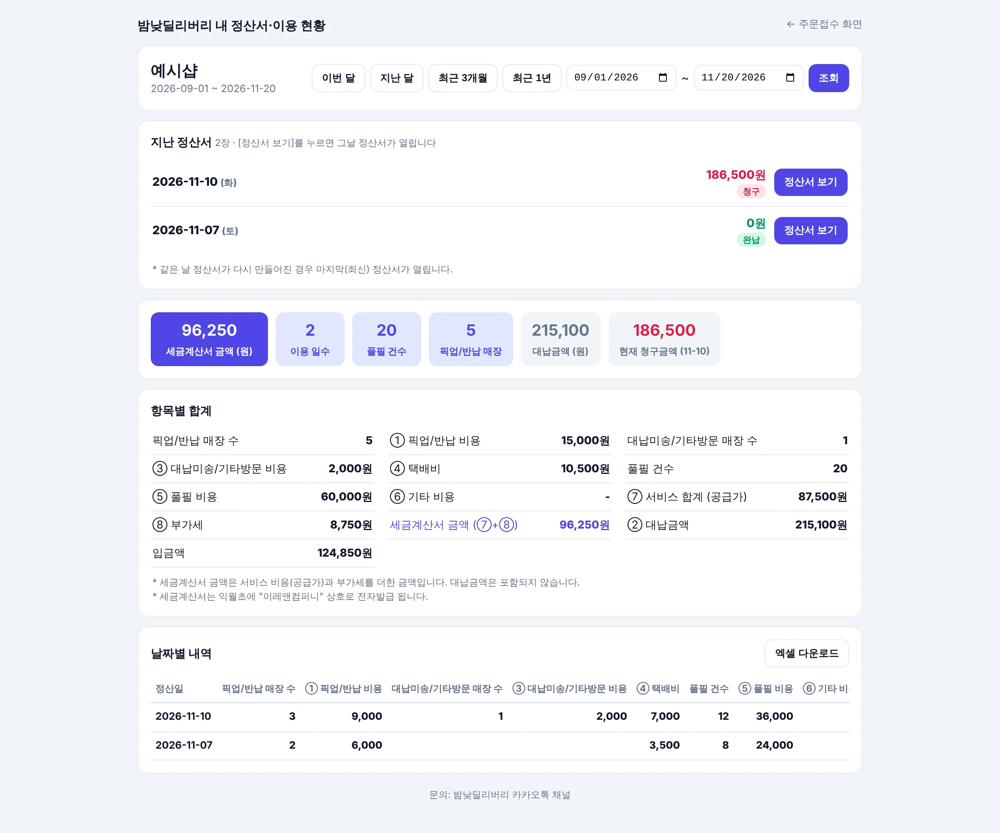
출고한 날에는 알림톡(또는 문자)으로 정산서 링크를 보내드려요. 링크를 누르면 휴대폰에서도 바로 열립니다. 지난 정산서는 [정산서·이용현황]에서 [정산서 보기]로 다시 볼 수 있어요.
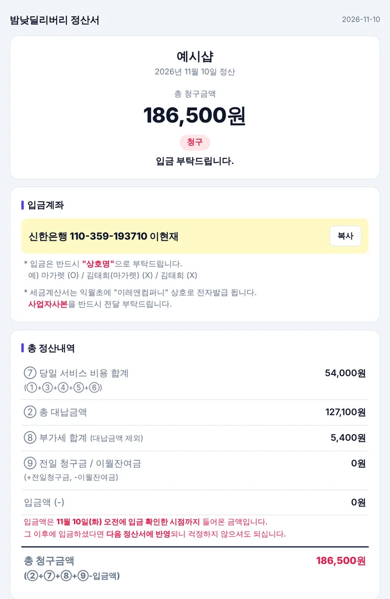
택배접수 화면 아래 내 접수 주문목록에서 내가 넣은 주문을 모두 볼 수 있어요.
✏️ 수정·삭제는 밤낮딜리버리가 접수를 마감(접수완료)하기 전, 출고 전 주문만 할 수 있어요. 그 뒤에는 카톡으로 말씀해 주세요.
화면 맨 위 보라 [출고 리포트] 버튼을 누르면 열려요. 기간 동안 몇 건이 나갔는지, 얼마를 벌었는지 한눈에 봅니다.
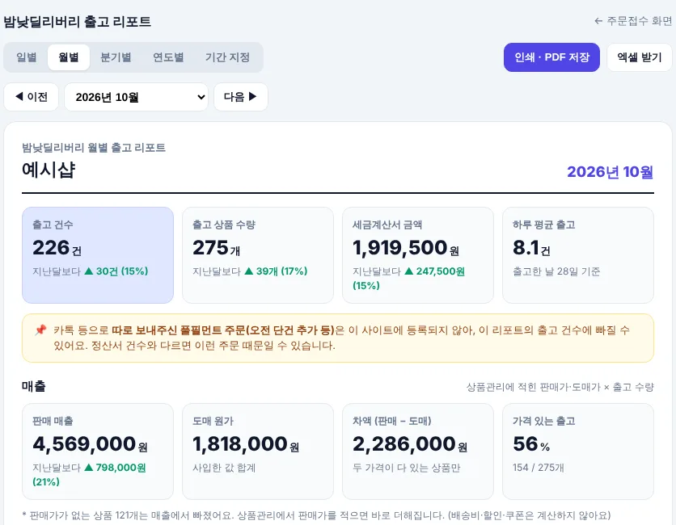
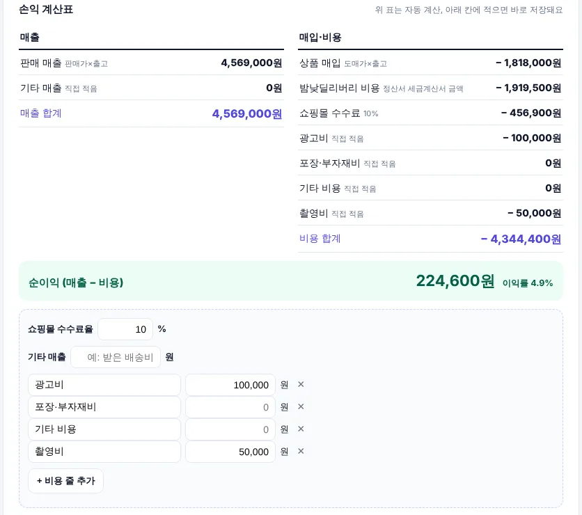
📌 출고 건수는 송장번호 기준이에요. 카톡 등으로 따로 보내주신 주문(오전 단건 추가 등)은 사이트에 없어서 빠질 수 있어요. 배송비·할인·쿠폰은 계산하지 않은 대략의 손익이에요.
출고가 끝나면 내 접수 주문목록의 주문 옆에 송장번호가 들어가요.
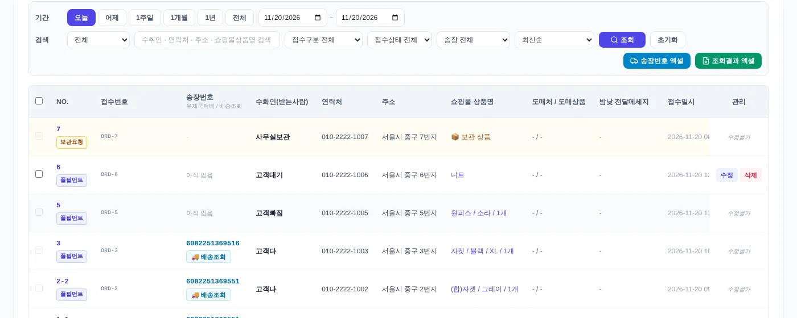
📌 송장번호가 "아직 없음"이면 아직 출고 전이거나 등록 전이에요. 카톡 등으로 따로 보내주신 주문은 이 목록에 없을 수 있어요. 송장번호는 지금처럼 단톡방으로도 보내드려요.
풀필먼트를 쓰지 않고 픽업·택배수령을 이용하시는 대표님을 위한 기능이에요. [매장/사무실 택배접수] 화면 아래 🛒 사입 목록 만들기 칸에 있어요.
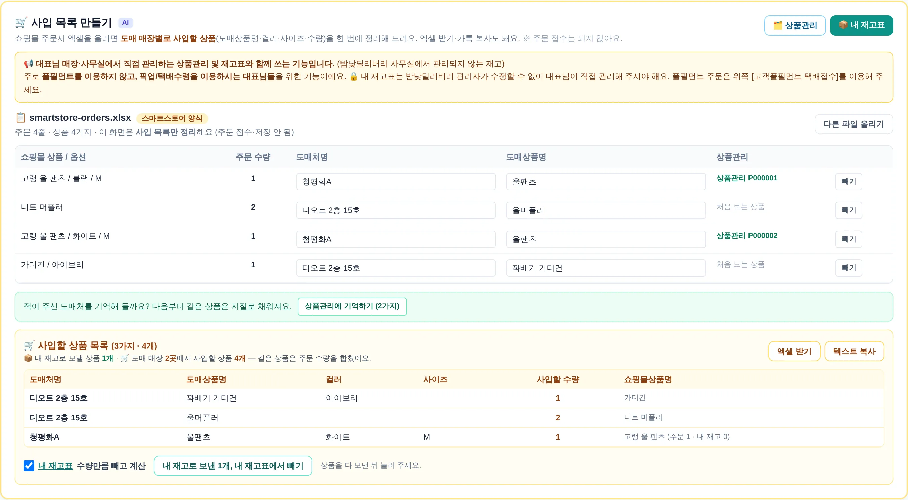
주의 여기서는 주문 접수가 되지 않아요. 사입팀 픽업은 SO솔루션이나 [사입팀 픽업요청]으로, 풀필먼트 주문은 [고객풀필먼트 택배접수]로 접수해 주세요.
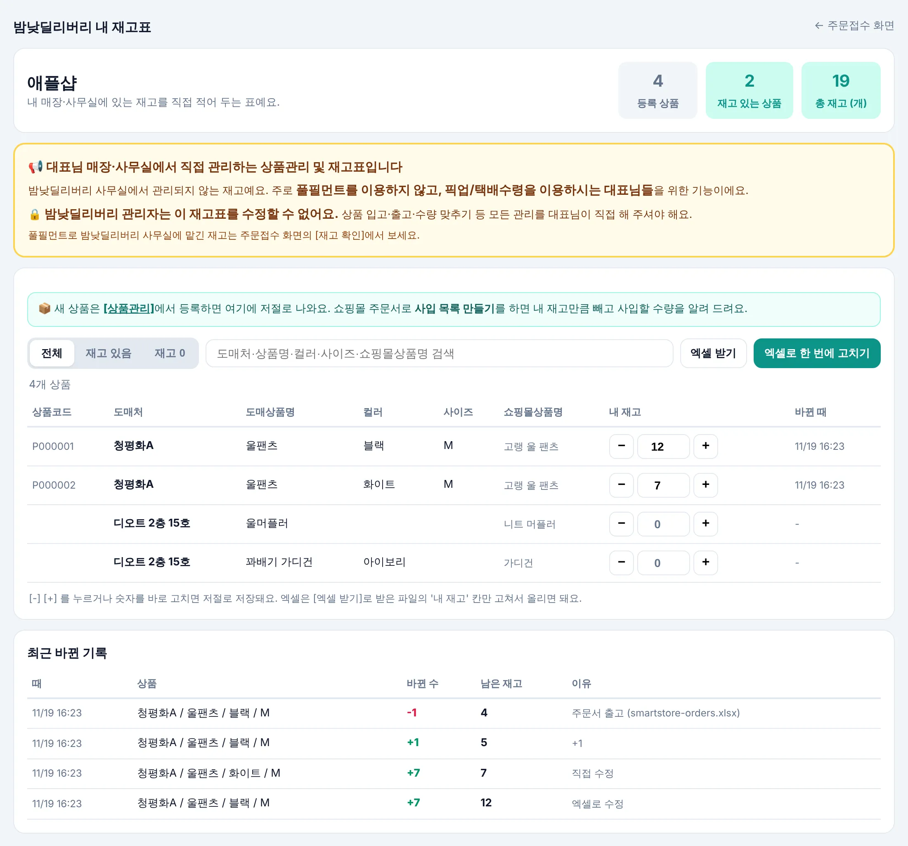
🔒 내 재고표는 밤낮딜리버리 관리자가 고칠 수 없어서 대표님이 직접 관리해 주셔야 해요. 밤낮딜리버리 사무실에 맡긴 재고는 [재고 확인]에서 보세요.
오른쪽 위 [내정보]를 누르면 열려요.
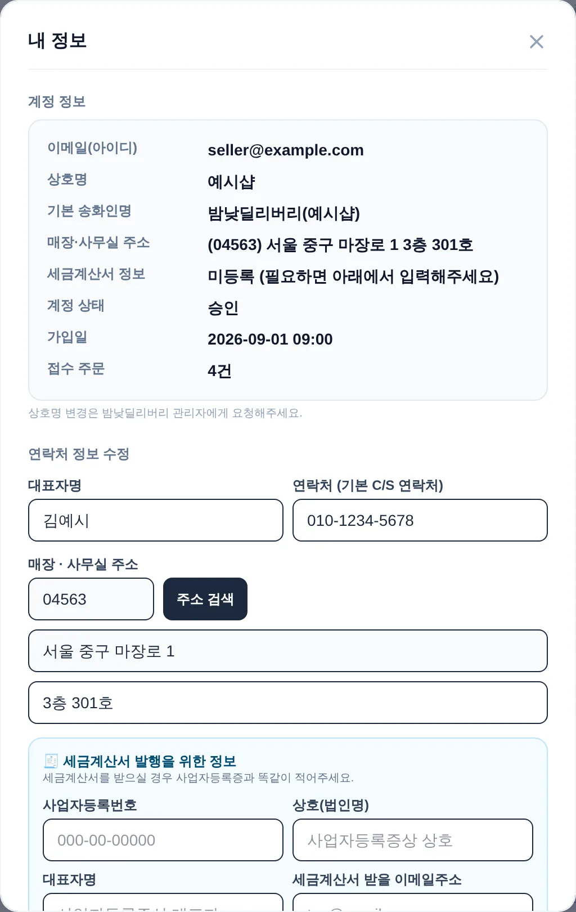